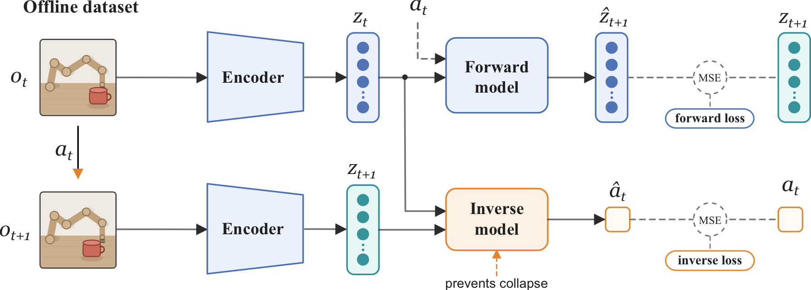
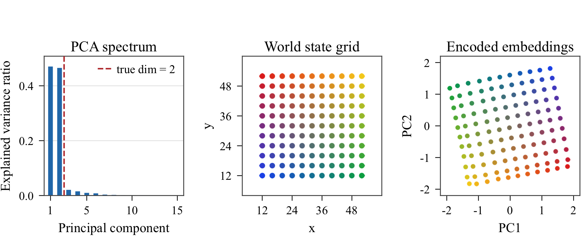
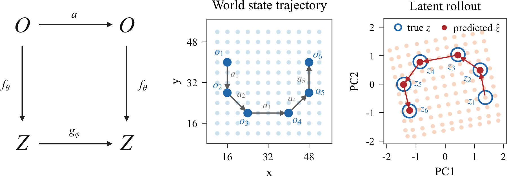
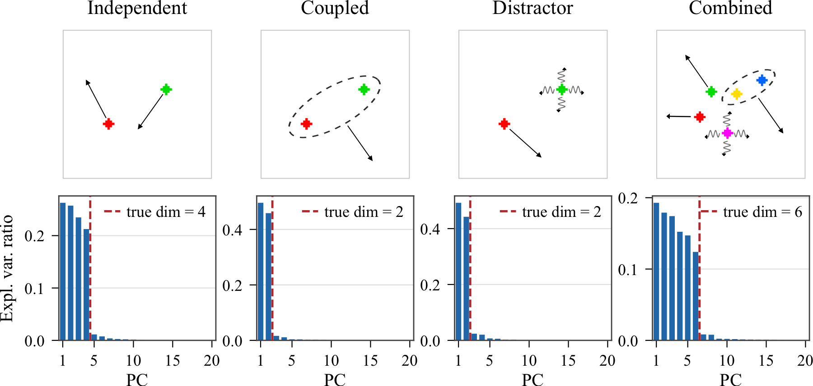
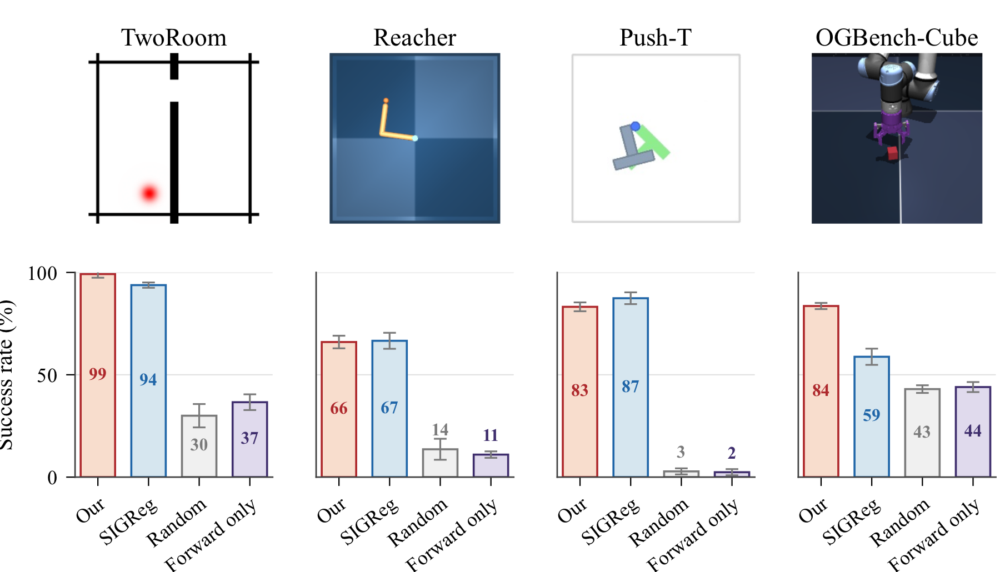
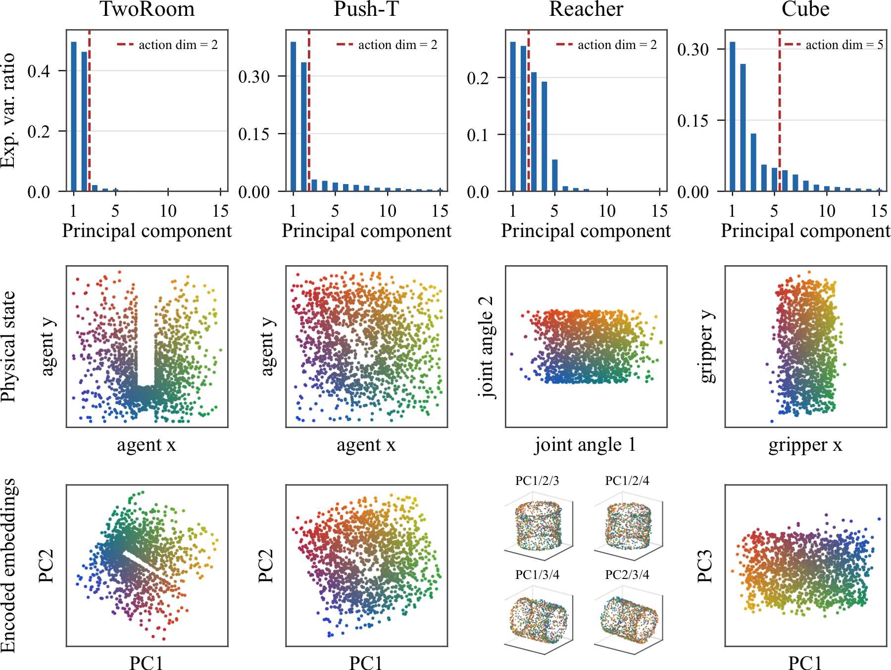

TL;DR
We introduce a sensorimotor world model (SMWM): a latent world model trained end-to-end from pixels with inverse dynamics regularization as the sole anti-collapse mechanism. Empirically, SMWM learns interpretable low-dimensional representations and achieves competitive planning performance across 2D and 3D tasks.
Abstract
Perception for action suggests that representations of the world should be shaped not by visual fidelity alone, but by their relevance for actions. At the same time, latent JEPA-style world models advocate learning compact predictive states from high-dimensional observations to facilitate the prediction of future states, but end-to-end training of these models is nontrivial because representations may collapse if our only goal is to construct a latent state that is easy to predict. We introduce SMWM: a latent world model trained end-to-end with inverse dynamics regularization. This single regularizer addresses both issues: it prevents representation collapse and induces action-aligned representations. By forcing latent states to preserve information about the action underlying a transition, it biases the model toward the controllable degrees of freedom of the environment while discarding uncontrollable distractors. This yields stable latent world models trained from offline, reward-free trajectories, without frozen encoders, exponential moving averages, or complex latent regularizers. Empirically, SMWM learns compact, interpretable latent spaces and enables competitive planning performance across simple 2D and 3D control tasks.
Approach
We consider an offline dataset \(\mathcal{D} = \{(o_t, a_t, o_{t+1})\}\) of reward-free transitions, where \(o_t\) and \(o_{t+1}\) are consecutive pixel observations and \(a_t \in \mathcal{A} \subseteq \mathbb{R}^m\) is the continuous action executed between them. SMWM consists of an encoder \(f_\theta\), a forward dynamics model \(g_\phi\), and an inverse dynamics model \(h_\psi\), all trained jointly from the same transition data.
{kind=link}

The forward component learns dynamics directly in embedding space. Given a transition, both observations are encoded and the forward model predicts the next embedding from the current embedding and action:
The corresponding prediction loss minimizes the discrepancy between the predicted embedding and the encoded next observation,
On its own, this objective admits the familiar collapsed solution: a constant encoder and a constant predictor can achieve zero forward loss while discarding all information about the observation. The inverse head prevents this by requiring the action to remain recoverable from the pair of consecutive embeddings,
with the mean-squared inverse dynamics loss
The final objective combines these two terms, allowing both the forward and inverse losses to shape the encoder:
Learned Latent Structure
To build intuition for what SMWM learns, we first consider a minimal testbed with known ground-truth state, intrinsic dimension, and action geometry. In dot world, a single colored dot is rendered on a \(64{\times}64\) canvas, and the action is the 2D displacement \(a_t=(\Delta x,\Delta y)\). Although the encoder maps images into a 64-dimensional latent space, the relevant state of the environment is only two-dimensional.
{kind=link}

A useful latent state should also be compatible with the learned forward dynamics. The paper therefore tests whether encoded observations and autoregressive latent predictions agree along a 5-step action sequence. The resulting rollout shows that the forward model tracks the encoded ground-truth trajectory in the learned latent space.
{kind=link}

The same analysis can be made more stringent by varying which degrees of freedom are controllable and by introducing distractors whose motion is not controlled by the action. In these settings, the learned representation should retain the coordinates needed for action recovery and forward prediction while suppressing variation that is neither controllable nor predictable.
{kind=link}

Planning in Latent Space
The latent structure recovered above is useful only insofar as it carries over to richer environments and supports downstream control. For goal-conditioned planning, a current observation \(o_1\) and goal observation \(o_g\) are encoded as \(z_1=f_\theta(o_1)\) and \(z_g=f_\theta(o_g)\). Candidate action sequences are rolled out through the learned forward model, and each sequence is scored by its terminal distance to the goal embedding,
The action sequence is optimized with the Cross-Entropy Method inside a receding-horizon MPC loop. Experiments evaluate TwoRoom, Reacher, Push-T, and OGBench-Cube with a fixed budget of \(50\) environment steps per episode and goals placed \(25\) steps ahead of the initial state.
The main comparison is against LeWorldModel (LeWM), which uses SIGReg as its anti-collapse mechanism. This baseline shares the encoder and predictor architecture but replaces inverse dynamics regularization with a regularizer that encourages the latent embedding distribution to match an isotropic Gaussian.
{kind=link}

Representation Analysis
To assess what physical content the embeddings retain, we first probe frozen embeddings for ground-truth state variables using both linear and two-layer MLP probes. Reported values are held-out \(R^2\) scores on a \(5{,}000\)-sample validation split after training probes on \(25{,}000\) embeddings per environment and method.
| Environment | Quantity | Linear SMWM | Linear SIGReg | Linear Fwd. | MLP SMWM | MLP SIGReg | MLP Fwd. |
|---|---|---|---|---|---|---|---|
| TwoRoom | agent position | 1.000 | 0.996 | 0.832 | 1.000 | 1.000 | 0.991 |
| Reacher | joint angles | 0.946 | 0.999 | 0.647 | 0.995 | 1.000 | 0.962 |
| Push-T | agent position | 0.993 | 0.954 | 0.293 | 0.988 | 0.986 | 0.433 |
| Push-T | block position | 0.946 | 0.973 | 0.352 | 0.981 | 0.996 | 0.623 |
| Push-T | block orientation | 0.664 | 0.931 | 0.202 | 0.882 | 0.987 | 0.491 |
| Cube | cube position | 0.998 | 0.975 | 0.706 | 0.998 | 0.993 | 0.854 |
| Cube | gripper position | 0.999 | 0.986 | 0.902 | 0.999 | 0.995 | 0.979 |
| Cube | gripper opening | 0.989 | 0.961 | 0.269 | 0.992 | 0.983 | 0.427 |
We then inspect how this information is organized geometrically. For each environment, the figure below shows the PCA spectrum of held-out SMWM embeddings, the distribution of a representative ground-truth quantity in physical state space, and the embeddings projected onto a low-dimensional principal-component subspace, color-coded by the same physical quantity. The spectra reveal whether the representation concentrates on a compact subspace, while the projections show whether the dominant latent directions align with controllable state variables.
{kind=link}

Citation
@misc{ivashkov2026sensorimotor,
title = {Sensorimotor World Models: Perception for Action via Inverse Dynamics},
author = {Ivashkov, Petr and Balestriero, Randall and Sch{\"o}lkopf, Bernhard},
year = {2026},
eprint = {2606.20104},
archivePrefix = {arXiv},
primaryClass = {cs.LG},
url = {https://arxiv.org/abs/2606.20104}
}